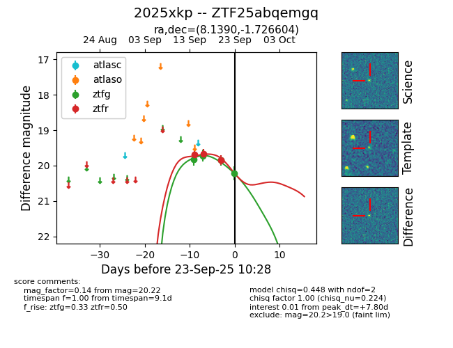
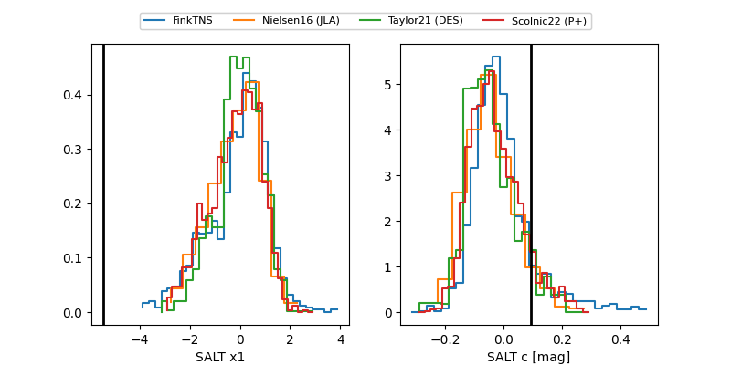

FINK: ZTF25abqemgq
Lasair: ZTF25abqemgq
ALeRCE: ZTF25abqemgq
TNS: 2025xkp
YSE: 2025xkp
ZTF25abqemgq (ztf,fink)
2025xkp (tns,yse)
equatorial (ra, dec) = (8.1390,-1.72660)
galactic (l, b) = (112.0383,-64.19825)


last ztfg=20.22, ztfr=19.84
4 ztfg, 3 ztfr detections